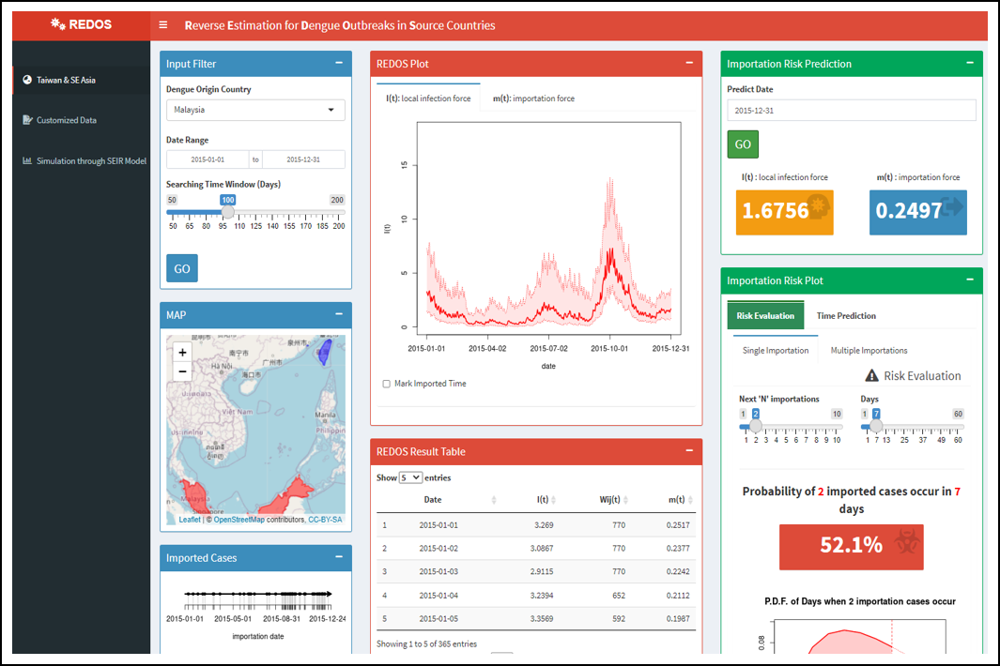

Reverse Estimation for Dengue Outbreaks in Source Countries
回推來源國登革熱疫情
此研究目標透過境外移入病例及國際間移動量，探索疫情傳播輸出國及輸入國之間的量化關係，推估疾病來源國的疫情趨勢，以提高對於境外疫情資訊的掌握。因此透過流行病學數理模式與機率分配之假設，開發網頁平台並建立來源疫情回推模型 (REDOS)，提供互動式操作及雲端計算，呈現視覺化回推結果及風險評估。
在這項研究中，資料處理、運算過程及空間分析都是在 R 中完成，並透過 R Shiny 儀表板來建立互動式應用程式網頁。
更多詳細資訊：